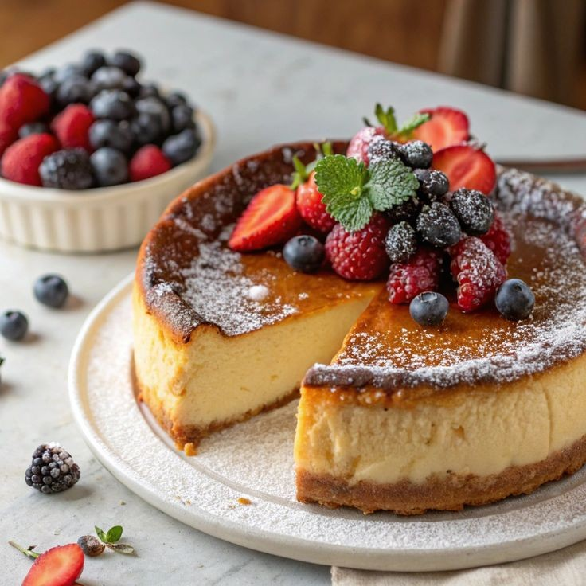

Burnt Basque Cheesecake

Category: Dessert
Ingredients:
- 200g cream cheese (softened)
- 1/2 cup sugar
- 2 large eggs
- 1 cup heavy cream
- 1 tbsp all-purpose flour
- 1 tsp vanilla extract
- Pinch of salt
Instructions:
- Preheat oven to 220°C (430°F). Line a 6-inch round cake tin with parchment paper, allowing it to overhang.
- Beat cream cheese until smooth. Add sugar and beat until combined.
- Add eggs one at a time, mixing well after each.
- Add cream, flour, vanilla, and salt. Mix until silky smooth.
- Pour into lined tin. Tap to release bubbles.
- Bake for 25–30 minutes until top is deeply golden brown and jiggly in the center.
- Cool at room temp, then refrigerate for 4–6 hours or overnight.
- Peel back parchment and slice gently. Serve chilled or at room temp.
← Back to Home